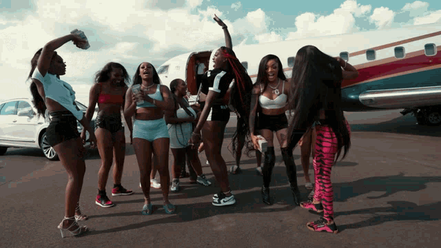

The Memphis Connection (2021) In 2021, GloRilla met producer Hitkidd at a Memphis rap showcase. They collaborated on the EP Set The Tone, launching a partnership that redefined both their careers. Hitkidd eventually offered GloRilla a beat originally intended for Megan Thee Stallion, setting the stage for her massive breakout.

The resulting track, "F.N.F. (Let's Go)," became a viral crunk anthem in Spring 2022. Fueled by a TikTok dance trend, the song hit the Billboard Hot 100 and earned a Grammy nomination for Best Rap Performance, instantly making GloRilla a household name.
Following the success of "F.N.F.," Memphis rap mogul Yo Gotti signed GloRilla to his Collective Music Group (CMG) in July 2022. Joining stars like Moneybagg Yo, the deal provided the resources to scale her career while maintaining her authentic Memphis sound.
GloRilla maintained her momentum with "Tomorrow 2" featuring Cardi B, which became her first top-ten hit. Her debut EP, Anyways, Life’s Great, dropped in late 2022, leading to "Best New Artist" wins at the BET and iHeartRadio awards and a spot in the 2023 XXL Freshman Class.
2024 was a banner year featuring the hits "Yeah Glo!" and "Wanna Be." After her mixtape Ehhthang Ehhthang peaked at number 18, she released her debut studio album, Glorious, in October. It debuted at number five, marking the highest first-week sales for a female rapper that year.
To support her album, GloRilla headlined the Glorious Tour from March to July 2025. Ending with a triumphant hometown show in Memphis, the tour solidified her transition from a viral sensation to a bona fide industry headliner.